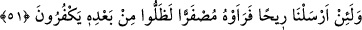

Bir rivâyette “Kim ölü bir araziyi ihyâ ederse orası ona âiddir.”[49] buyrulmuştur.
AllahTeâlâ da mü’minin nefsini ve kalbini ihyâ etmiştir. Şu halde mü’min şeytana değil
O’na âiddir. Yine tevbe eden kimse nefsini tâatle ihyâ ettiği zaman cehenneme değil
cennete âiddir.
Denilir ki: Allah nefisleri fetrete düştükten sonra irâdelerde sadâkat ile diriltir.
Kalbleri gaflete düştükten sonra muhâdaraların[50] nurlarıyla diriltir. Ruhları hicâba
düştükten sonra müşâhedelerin devâmı ile diriltir.
Seni andığım zaman ölürüm sonra dirilirim
Senin için defalarca dirilir ve defalarca ölürüm
Kalb ârifin bostanı ve cenneti/bahçesidir. Hayatı Allah Teâlâ’yı ma’rifet iledir. Onun
nurlarına nazar eden âlemden ve çiçeklerinden/süslerinden müstağnî olur.
Mesnevî’de der ki:
Bir sûfî, sûfilere özgü keşif amacıyla
Bahçede yüzünü dizlerine dayamıştı.
Bir süre sonra iç dünyâsına dalıp gitti.
Patavatsızın biri, onun uyur hâlinden rahatsız oldu.
Dedi, ne uyuyorsun? Uyan da asmaya,
Ağaçlara, nesnelere ve yeşilliklere bak.
“Bakınız” diyen Hakk’ın emrini duyup
Şu rahmet belirtilerine yüzünü çevir.
Sûfî dedi, ey heveskâr, rahmetin belirtileri gönüldedir.
Dışarıdakiler ancak belirtilerin belirtileridir.
Bahçeler ve meyveler gönüldedir.
Onun güzelliği yeryüzüne yansımıştır.
Ey yolcu, hayatı Hak’tan alırsan
Çamura ihtiyacın kalmaz, yürür gidersin.
Allah Teâlâ’dan rahmetinin eserlerini müşâhede ve sıfatlarının nurlarını mütâlaa
etmek için basîretlerimizi açmasını, zâtının sırlarının bostanına girmek, âyetlerinin ve
apaçık delillerinin harîminden hüviyyetinin haremine intikal için bize izin vermesini
niyaz ederiz. Hayrı ve isteneni bol bol veren de gönle hayat veren de O’dur.
51. Andolsun ki, bir rüzgâr göndersek de onu (ekini) sararmış görseler, ardından